Cloth Simulation
C++
Overview
Blinn-Phong
Mapping
Mirror
This project is an extension of my Cloth Simulation project, in which I apply different shading models to my cloth and sphere meshes.
A shader program takes in inputs/attributes such as positions, normals, and uv coordinates, and uses that information to output a single 4 dimensional vector with information regarding desired vertex transforms, modified positions, or color. Vertex shaders apply these transforms and geometric modifications, and their output is subsequently used by the fragment shaders to compute color.
Blinn-Phong
A Blinn-Phong shading model accounts for ambient, diffuse, and specular lighting.
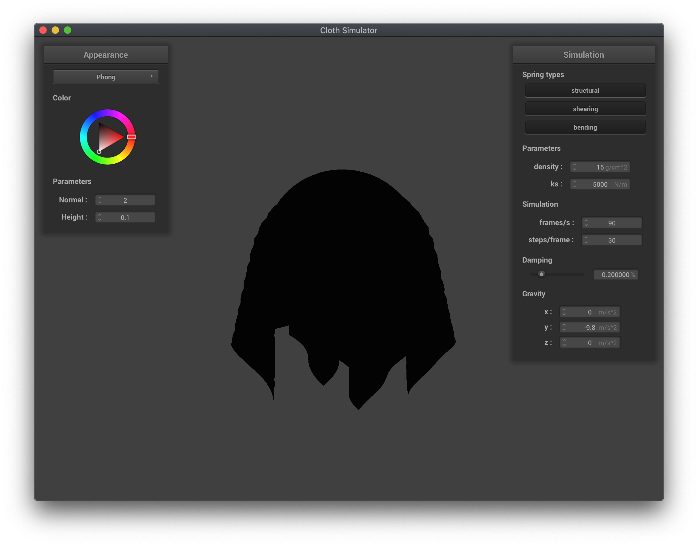
Ambient only
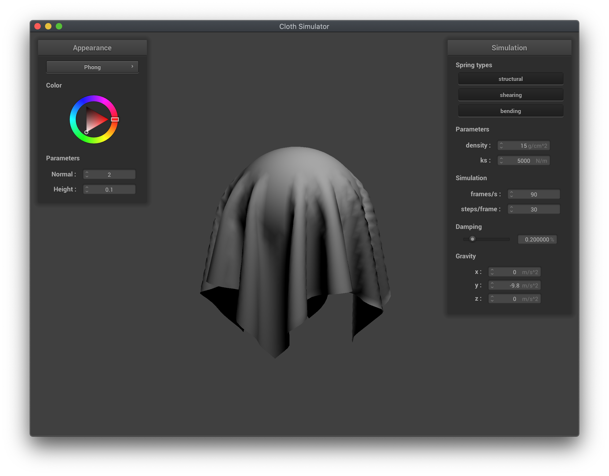
Diffuse only
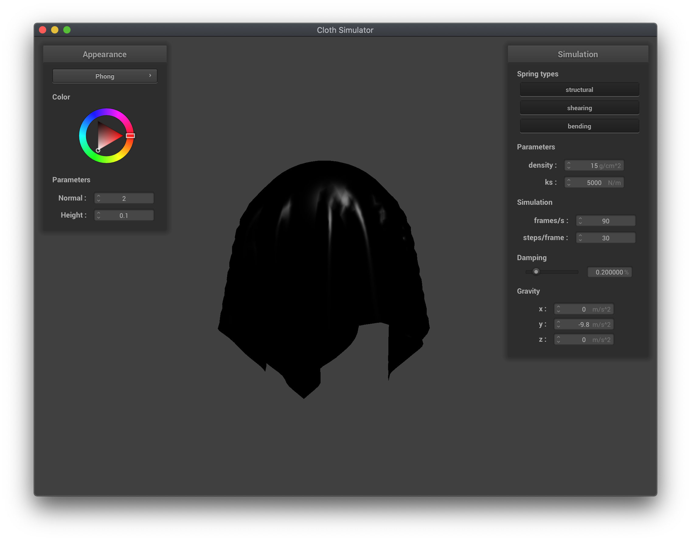
Specular only
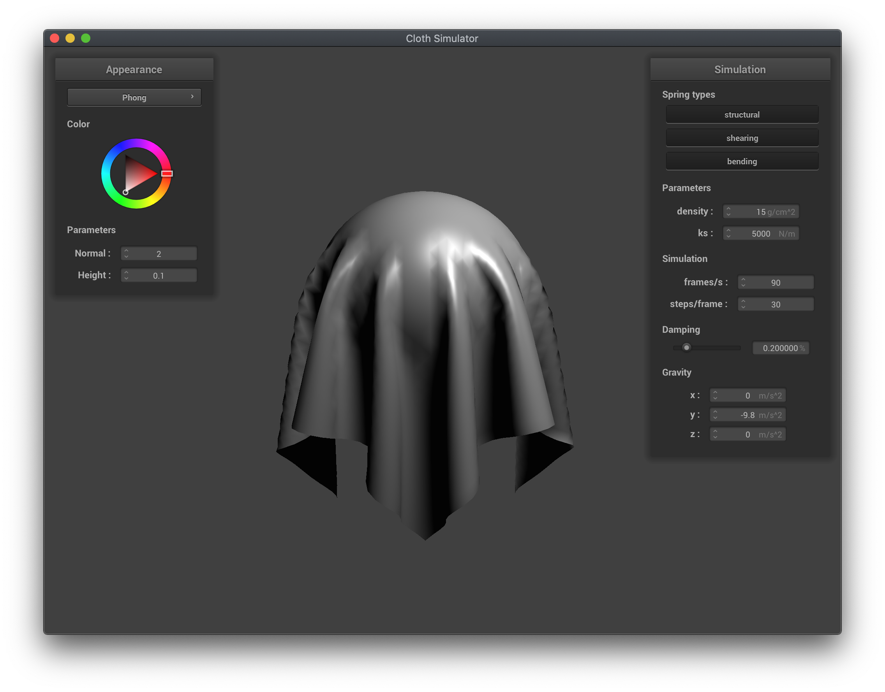
Full Blinn-Phong model
Texture Mapping
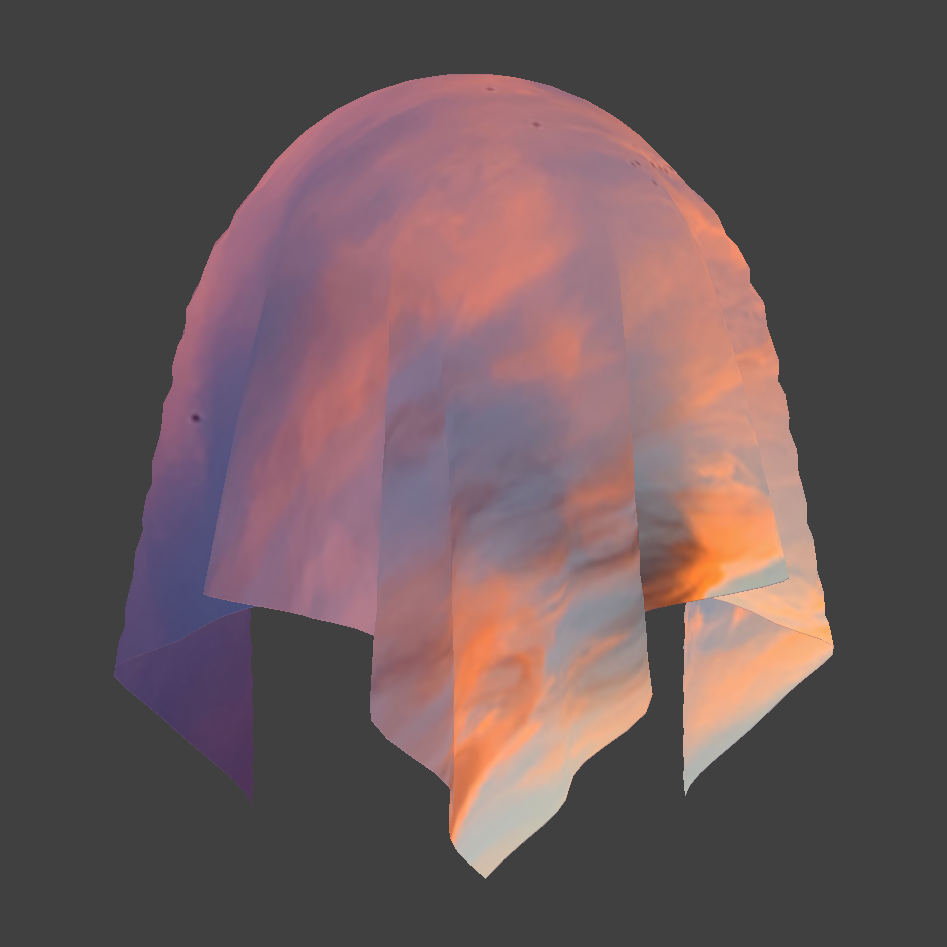
Mapped onto cloth
Bump and Displacement mapping
Bump mapping simulates bumps on the surface of the cloth/sphere without actually modifying the geometry of the meshes, by using modified surface normals to compute lighting. Displacement mapping, on the other hand, actually manipulates the geometry according to a texture input.
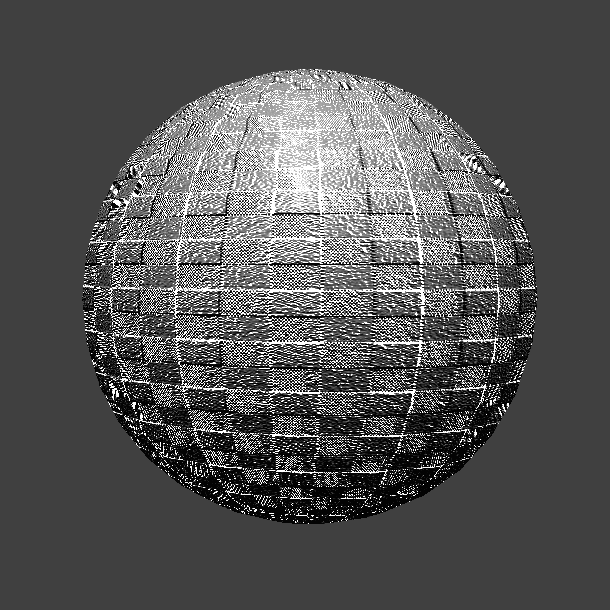
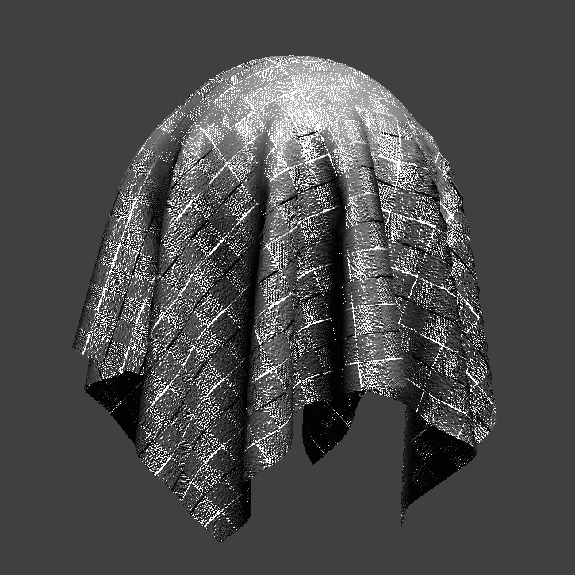
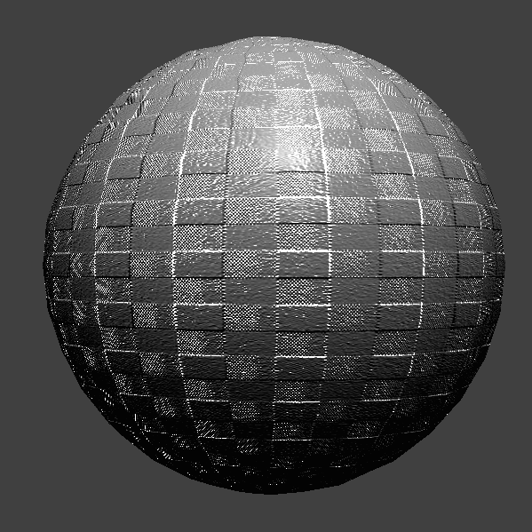
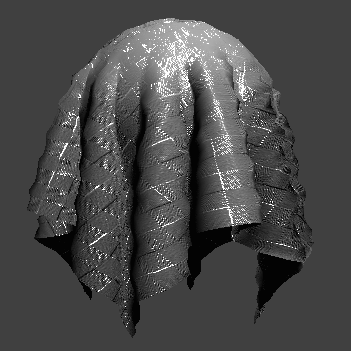
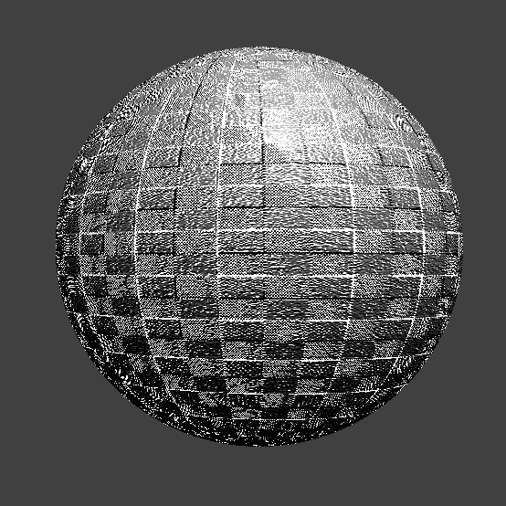
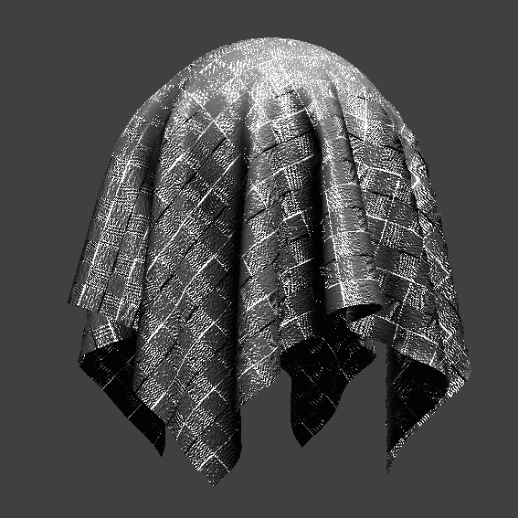
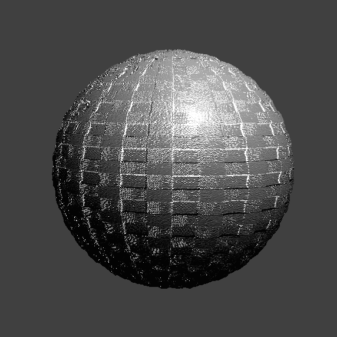
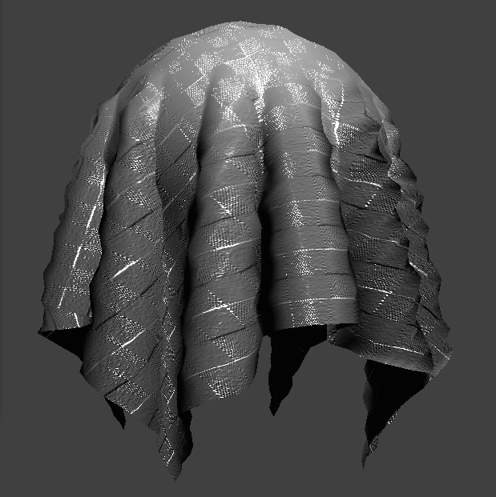
Mirror
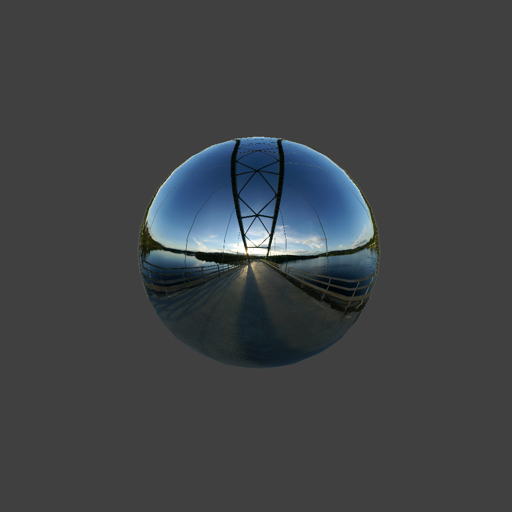
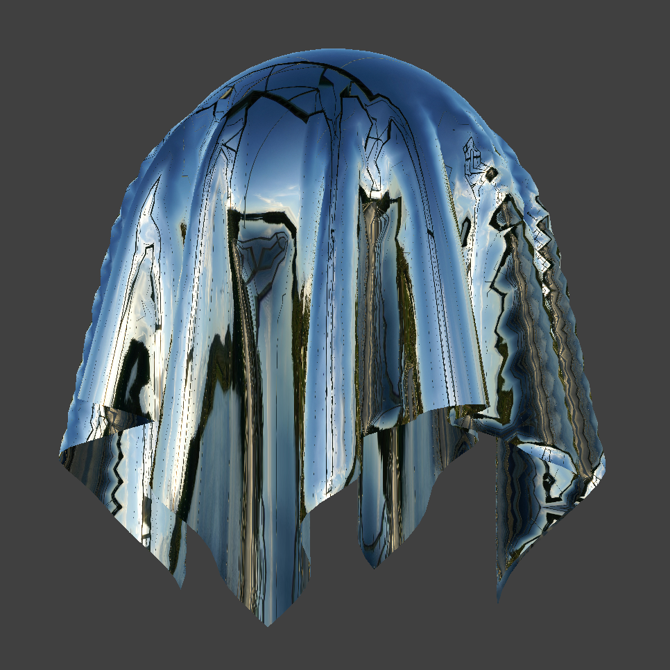